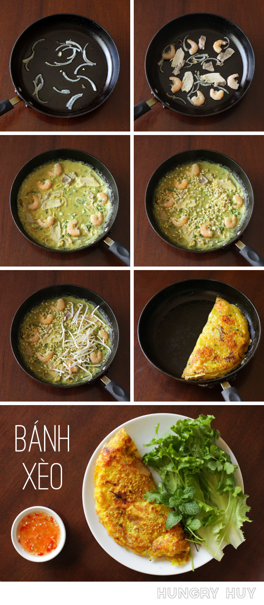

Bánh Xèo

Crispy Vietnamese Pancakes
Batter
- 255 g(1 3/4 cup) rice flour
- 85 g (0.7 cup) all-purpose flour
- 2-3 tsp tumeric
- 28 fl oz (3.5 cups) water
- 14 fl oz (396.9ml) coconut cream
- 1 tsp salt
- 1 spring green onion chopped about 1/2" long
Filling
- 1 lb (453 g) shrimp, headless
- 1.5 lb (680.39g) pork belly
- 1 medium yellow onion thinly sliced
- 1.5 lb (680.39g) bean sprouts
- 1/2 cup dry mung beans
Vegetables
- 1 head mustard greens
- 1 bunch mint
- 1 bunch cilantro
- 1 bunch Vietnamese perilla
Sauce
- 2 cloves of garlic per serving
- 4 tbsp fish sauce per serving
- 3 red chilly peppers
- 250 ml water per serving